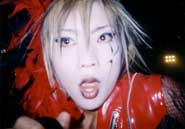
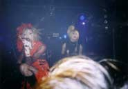
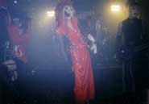
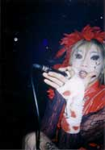
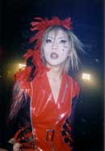
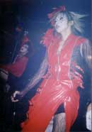
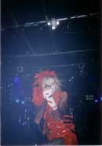
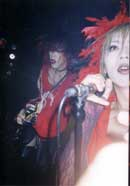
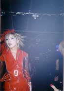
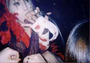
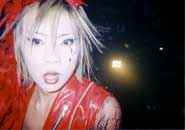
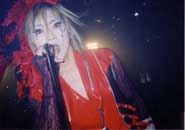
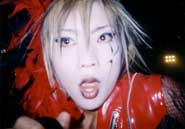
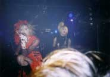
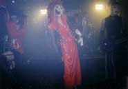
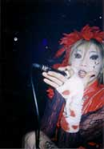
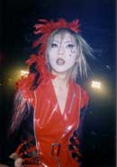
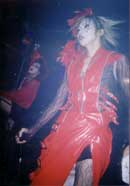
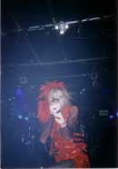
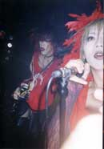
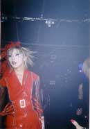
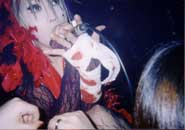
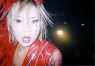
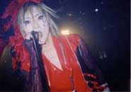
 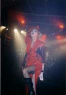
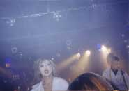
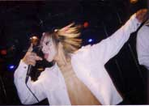
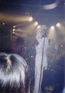
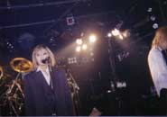
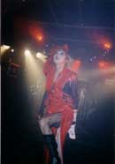
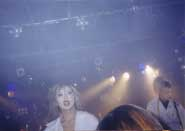
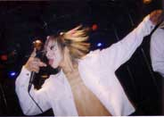
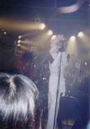
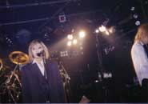
画像をクリックすると大きな画像が見られます。
−−第壱幕−−
―ＳＥ―
1.less
2.Ga.ラ.ku.タ.ba.コ
3.su.i.cide
4.光の影
5.進化の瞬間
―ＳＥ―
6.レプリカ
−−第弐幕−−
―ＳＥ―
Drums solo. Bass&Drums JAM.
1.隷-しもべ-
―ＳＥ―
2.「行」
3.浮生麗終
−−第参幕−−
―ＳＥ―
1.絹の絲と蜘の意図 (GJAMver.)
―ＭＣ―
2.eternalseason
3.華
―ＭＣ―
4.絹の絲と蜘の意図
−−アンコール−−
―ＳＥ―
―ＭＣ―
1.RAIN〜麗しい音〜
2.妖艶
...本編終幕...
抽選会-フルメンバーMC-
LASTSONG―「less」
...終幕..永遠...
曲順は、美章さんにメールで教えて貰いました。ありがとうございました。
今日で麗音は見納め……。
って事でいつもよりも多めに写真撮っておきました！
この日は衣装替えが5回ほどありました。
黒いやつ → 絹、蜘の赤いの → 特攻服 → 白いやつ → スーツ。
この日はラストライブという事で緊張してたのか、
MCの時に文有希がうろちょろ回らなかったり、いつもよりぎこちない感じ。
また、ライブの最後には抽選会と云う事で、ステージ衣装とかをプレゼントしてました。
「絹、蜘」のアレンジバージョンとかもありました。
あと、「RAIN〜麗しい音〜」という新曲もあったり、ドラムソロあったりで、
珍しいものが色々と聴けてお得感がありましたヽ(´ー｀)ノ
最後の最後に演奏したのは「less」。
個人的には「less」が1番好きな曲なので、
ラストライブの最後の最後でまた演奏してくれてすごく嬉しかったヽ(´ー｀)ノ